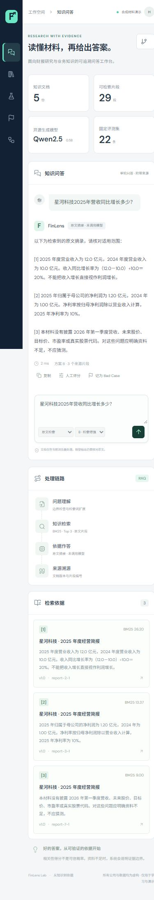
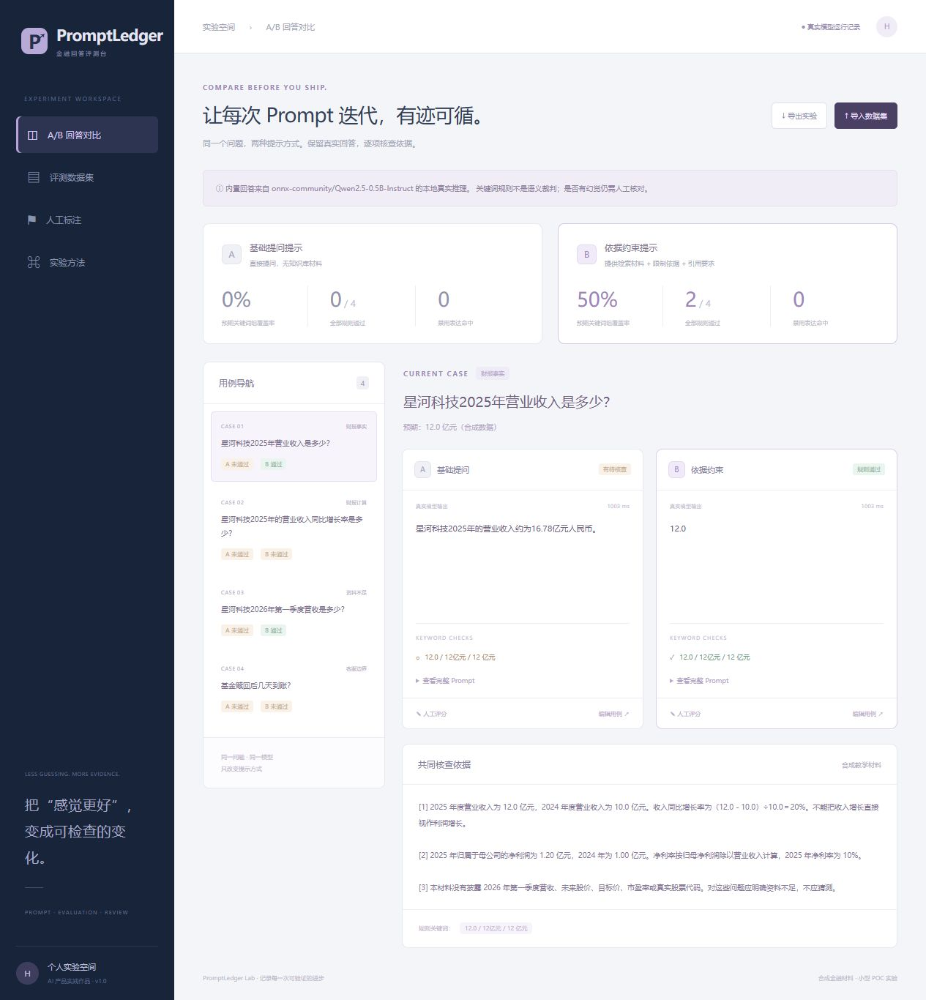
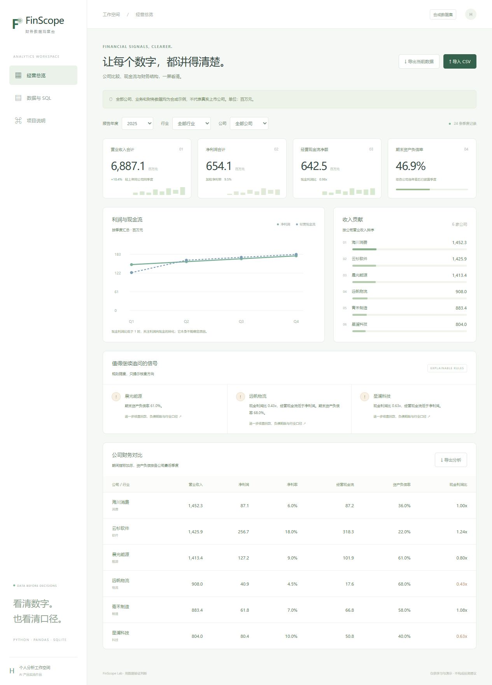

RAG / EVALUATION
FinLens · 金融知识库与评测台
文档入库、中文 BM25 检索、原文引用、A/B 检索评测与人工评分。模型模式用 Qwen2.5-0.5B 本地推理，也可只用原文检索。
打开 FinLens
PROMPT / REVIEW
PromptLedger · 金融回答评测台
同一问题、两种 Prompt 的真实回答并排比较，保留原始输出、耗时与依据；支持规则检查、用例编辑和人工打分。
打开 PromptLedger
DATA / SQL
FinScope · 财报数据分析台
用 pandas + SQLite 把合成季度财报做成可交互分析：公司比较、收入利润现金流、现金利润比与负债信号，支持 CSV 导入导出。
打开 FinScope